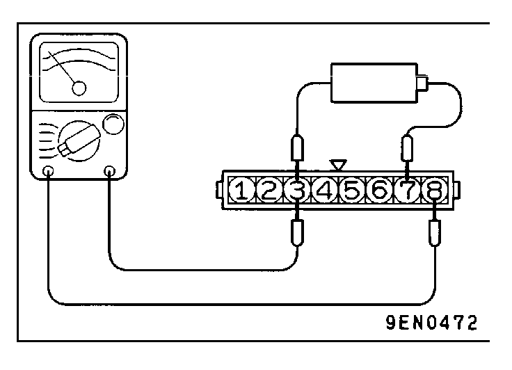
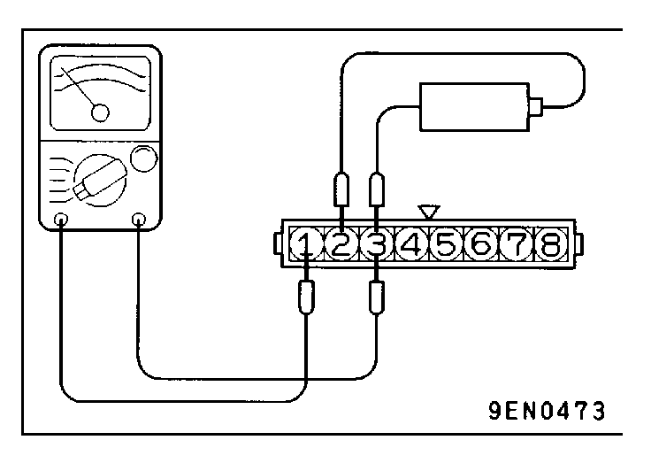

![[Previous]](https://mitsubishitechinfo.com/data/F24S/BUTTONS/fprevg.png)
![[Next]](https://mitsubishitechinfo.com/data/F24S/BUTTONS/fnextg.png)
 
IGNITION POWER TRANSISTOR CHECK
NOTE
An analog-type ohmmeter should be used.
No. 1 - No. 4 coil side
(1)Connect the negative (-) terminal of the 1.5V power supply to terminal 3 of the ignition power transistor; then check whether there is continuity between terminal 8 and terminal 3 when terminal 7 and the positive (+) terminal are connected and disconnected.
NOTE
Connect the (-) probe of the ohmmeter to terminal 8.
Terminal 7 and (+) terminal
Terminal 8 and terminal 3
Connected
Continuity
Unconnected
No continuity
(2)Replace the ignition power transistor if there is a malfunction.
No. 2 - No. 3 coil side
(1)Connect the negative (-) terminal of the 1.5V power supply to terminal 3 of the ignition power transistor; then check whether there is continuity between terminal 1 and terminal 3 when terminal 2 and the positive (+) terminal are connected and disconnected.
NOTE
Connect the (-) probe of the ohmmeter to terminal 1.
Terminal 2 and (+) terminal
Terminal 1 and terminal 3
Connected
Continuity
Unconnected
No continuity
(2)Replace the ignition power transistor if there is a malfunction.